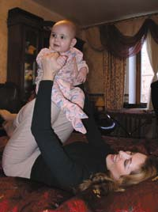
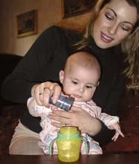

Психология материнства
Психологическая готовность к материнству
Материнство и основные аспекты его исследования в психологии
Динамика психологического состояния женщин во время беременности и после родов
Круг проблем, связанных с развитием детско-родительских взаимоотношений, в последние годы выдвигается в ряд наиболее значимых. Исследование психологов и психиатров показывают, что взаимоотношения ребенка с окружающими людьми, и в первую очередь с матерью, в первые годы жизни имеют чрезвычайно важное значение для его дальнейшего личностного развития и психического здоровья. Так, установлено, что дефицит общения со взрослыми уже в первые месяцы жизни ребенка ведет к отклонениям и задержкам в его психическом развитии.
Из литературы известно также, что неадекватное материнское отношение к ребенку в раннем детстве выдвигается на первое место среди средовых факторов в развитии шизофрении и других заболеваний. Существуют данные о том, что нарушения взаимоотношений ребенка с близкими имеют отдаленные последствия для формирования родительского поведения: большинство матерей, отказавшихся от своих детей, с раннего детства имели негативный опыт межличностных взаимоотношений в семье.
Около 50% обследованных психически здоровых матерей не смогли выработать адекватного отношения к ребенку. При исследовании готовности к материнству было обнаружено, что уже примерно у 40% беременных женщин обследованной выборки выявились те или иные особенности, могущие впоследствии оказать неблагоприятное влияние на развитие ребенка.
Таким образом, перед психологами стоит задача коррекции взаимоотношений матери и ребенка, точнее, своевременной коррекции материнского поведения. Эта задача требует раннего выявления отклонений в материнском поведении, понимания их причин и, соответственно, изучения закономерностей их становления.

Исследования убедительно доказали, что важнейшую роль в психическом и личностном развитии ребенка играет его общение со взрослыми людьми. Под общением понимается такое взаимодействие между людьми, при котором адресатом воздействий выступает личность другого человека, т.е. личностно-ориентированное взаимодействие. Сопоставление особенностей общения взрослых с младенцами в домах ребенка и в семьях позволило выделить качественное различие в их взаимодействии с ребенком и соответствующее различие в отношении к нему. Это различие было обозначено в терминах «отношение как к субъекту» и «отношение как к объекту». Тот или иной тип отношения, проецируясь на взаимодействие взрослого с ребенком, определяет характер общения между ними. Только при отношении взрослого к ребенку как к субъекту реализуется личностно-ориентированное общение с ним. При этом создаются наиболее благоприятные условия для формирования у младенца положительного самоощущения, переживания себя как источника активности и в конечном счете – для общего психического развития. При объектном отношении взрослого у младенца не формируется положительное самоощущение, он становится пассивным, его дальнейшее развитие задерживается и искажается.
Исходя из сказанного, психологическая готовность к материнству рассматривается нами как специфическое личностное образование, стержневой образующей которого является субъект - объектная ориентация в отношении к еще не родившемуся ребенку. Мы предположили, что это отношение проецируется после рождения ребенка в реальное материнское поведение и определяет его эффективность.
Чтобы выявить круг показателей уровня психологической готовности к материнству, необходимо было предварительно разработать модель формирования этого личностного образования
Формирование материнского поведения изучалось преимущественно этологами у животных и лишь в последние годы стало исследоваться и у человека. В своей работе мы исходим из представления о том, что психологическая готовность к материнству формируется под влиянием неразделенных биологических и социальных факторов и, с одной стороны, имеет инстинктивную основу, а с другой – выступает как особое личностное образование.
Мотивационная основа материнского поведения человека формируется на протяжении всей жизни, испытывая влияние как благоприятных, так и неблагоприятных факторов. Соответственно, уровень психологической готовности к материнству определяется суммарным эффектом действия этих факторов к тому моменту, когда женщина становится матерью. Не претендуя на выявление всех значимых для формирования материнского поведения этапов и факторов, мы попытались вычленить наиболее существенные из них и использовать при выделении показателей уровня психологической готовности к материнству.
Важнейший, с нашей точки зрения, этап – это первые годы жизни. В отношении человека мы можем интерпретировать роль раннего коммуникативного опыта следующим образом. Основы личности, отношение человека к миру и к себе самому закладываются с первых дней жизни в общении с близкими взрослыми.
Складывающееся в общении первое личностное образование может рассматриваться как первый вклад в становление будущего родительского поведения. Если опыт общения с близкими взрослыми был положительным, это означает, что стартовые условия для формирования субъектного отношения к другим людям были благоприятными и основа для формирования субъектного отношения к своему ребенку заложена.О характере раннего коммуникативного опыта, полученного будущей матерью в общении с близкими взрослыми, можно судить по аффективным следам, оставленным в ее первых воспоминаниях о себе и родителях, об их стиле воспитания, о своих привязанностях. Если родители были ласковы, общение с ними оставило в памяти женщины яркий след, если была сильная привязанность к матери или другим родственникам, значит, в раннем детстве женщина имела благоприятный опыт эмоционального общения, что ставит ее в более выгодные условия в прогнозе будущего материнского поведения по сравнению с теми, кто такого опыта не имел.
Большое значение в становлении родительского поведения вслед за этологами мы придаем общению со сверстниками, старшими и младшими детьми. Общение со сверстниками проходит путь своего становления по мере преобразования объектного отношения к другому ребенку в субъектное. На этом этапе также важным является опыт, приобретаемый будущей матерью в играх с куклами, в «дочки-матери».
Таким образом, в первую группу показателей психологической готовности к материнству мы включили
особенности коммуникативного опыта женщины в ее раннем детстве.
Безусловно, важным этапом в становлении материнского поведения является период от зачатия до рождения ребенка. В это время в организме и психике женщины происходят глобальные преобразования, актуально подготавливающие ее к материнству, вырабатывается отношение женщины к своему собственному конкретному еще не родившемуся ребенку. Многие авторы выделяют в качестве важных факторов, влияющих в этот период на последующее материнское поведение, желанность – нежеланность ребенка, особенности протекания беременности и субъективное переживание женщиной беременности.
Наиболее благоприятной ситуацией для будущего материнского поведения являются желанность ребенка, наличие субъектного отношения матери к еще не родившемуся младенцу, которое проявляется в любви к нему, мысленной или вербальной адресованности, стремлении интерпретировать движения плода как акты общения. Поэтому во вторую группу показателей готовности к материнству мы включили
отношения к еще не родившемуся ребенку на этапе беременности.
Третью группу показателей составили
установки женщины на стратегию воспитания ребенка. То, как она намеревается осуществлять уход за ним, с нашей точки зрения, также свидетельствует о преобладании субъектного или объектного отношения к ребенку.
Не претендуя на полноту и окончательную завершенность модели формирования психологической готовности к материнству, мы предположили, что выделенные показатели в совокупности могут отражать ее уровень и служить основанием для прогноза эффективности последующего материнского поведения.
Проблема изучения материнства в психологии
Изучение материнства в настоящее время становится все более популярным как в теоретическом, так и в прикладном аспектах. Проблемами материнства занимаются социологи, медики, педагоги и многие другие специалисты. Актуальность этих исследований теперь уже не нуждается в дополнительной обосновании. Полученные в многочисленных работах данные о влиянии материнского отношения и поведения на развитие ребенка во всех возрастах говорят сами за себя. На мой взгляд, наиболее актуальным в данной области исследований в настоящий момент является систематизация имеющихся направлений и аспектов изучения материнства. Это необходимо в первую очередь потому, что появилось немало публикаций, в которых не всегда выдерживается строгий научный стиль изложения, эксплуатируется понятие «материнский инстинкт» (без определения, как самого термина «инстинкт», так и содержания того, что понимается под «материнским инстинктом»), авторы рассуждают о необходимости осознания матерью своего высокого предназначения и растворения в нирване материнского счастья, чем и будет достигнуто оптимальное для развития ребенка и самореализации женщины содержание материнства. Основным приемом приведения женщины к этому состоянию считается ее личностный рост и гармонизация духовной и физической сфер.
Ничуть не умаляя значения этих факторов, следует отметить, что, во-первых, этого недостаточно, так как помимо «акме» необходимо еще соответствующее отношение к детям, а также сформированность операциональной стороны, в том числе и в области вербального и невербального общения с ребенком. А во-вторых, рождение ребенка для женщины вполне может быть (или стать в результате соответствующего психологического воздействия, оказываемого в некоторых группах подготовки к сознательному родительству) средством для достижения целей самореализации и самоактуализации, что в этом случае будет свидетельствовать о замене самостоятельной ценности ребенка на ценности из других потребностно - мотивационных сфер женщины. А это является отрицательным фактором в материнско-детском взаимодействии.
Не менее острым является положение в той области знаний, которая относится к пренатальному и раннему постнатальному периоду развития ребенка. Этот возраст прямо включается в проблематику материнства, поскольку мать рассматривается как «среда», и условие существования и развития ребенка. Здесь встречаются рассуждения с позиций трансперсональной и экзистенциальной психологии, употребляются понятия биоэнергетики, генетической и клеточной памяти (причем без всякого обоснования), некритически используются психотерапевтические модели, созданные по принципу «психологической правды для клиента», а не на основе научного исследования раннего онтогенеза психики. Разумеется, такие модели работают как прием в психотерапии, но этого недостаточно для их использования в качестве методологического инструментария в организации условий развития ребенка.
Исследовательская и практическая работа с беременными женщинами, матерями с детьми, общение со специалистами разных профилей, работающими в области материнства и раннего детства, а также опыт преподавания в ряде вузов, готовящих соответствующих специалистов, привел меня к тревожному выводу о том, что имеющиеся сведения используются некритично; научные и в основном практические работники и преподаватели просто тонут в потоке недостаточно профессиональной литературы, не имея средств ориентации в ней. Разумеется, полностью решить задачу систематизации исследований в области психологии материнства в рамках одной статьи (а видимо, и целой книги) невозможно. В данном случае я ставлю перед собой цель кратко охарактеризовать основные аспекты и направления изучения материнства в психологии и смежных областях.
Поток современных исследований в области психологии материнства и смежных проблем отличается обширностью, разнонаправленностью концепций и подходов. Если обобщать имеющиеся направления исследований, то можно обнаружить, что материнство, как психосоциальный феномен, рассматривается с двух основных позиций: материнство как обеспечение условий для развития ребенка и материнство как часть личностной сферы женщины. Рассмотрим эти исследования подробнее.

Материнство как обеспечение условий для развития ребенка
В этих исследованиях материнство рассматривается в контексте материнско-детского взаимодействия. Основной ход рассуждений в постановке целей работ и интерпретации – от задач воспитания ребенка к особенностям матери. Обсуждаются материнские качества и характеристики материнского поведения, а также их культурные, социальные, эволюционные, физиологические и психологические аспекты. Все это часто рассматривается в контексте определенного возраста ребенка, в результате чего сами материнские качества и функции, анализируемые в разных работах, не всегда можно сопоставить между собой. В исследованиях, проводимых с этих позиций, можно выделить несколько направлений.
Культурно-исторические аспекты материнства. Институт материнства рассматривается как исторически обусловленный, изменяющий свое содержание от эпохи к эпохе. Кросскультурные исследования показали, что в тех случаях, когда рождение ребенка противоречит социальным ожиданиям (внебрачность, помеха социальному или половому статусу женщины), женщины могут идти на все, чтобы не рожать детей или избавляться от них разными способами. Скрытый инфантицид (практика несчастных случаев) и отказ от ребенка (подбрасывание, продажа, передача на усыновление) были обычными для всех времен и народов, в том числе и для России, вплоть до XX в. Понятие «материнский инстинкт» является мифом. Материнская любовь – это понятие, которое наполняется в различные периоды истории различным содержанием. Женщина становится лучшей или худшей матерью в зависимости от того, ценится или обесценивается в обществе материнство.
Биологические аспекты материнства. В это направление можно объединить исследования, в которых мать и обеспечиваемые ею условия рассматриваются как организация физиологической и стимульной среды для развития ребенка. Большое значение придается эволюционным аспектам формирования физиологических, мотивационных и поведенческих механизмов материнства. Некоторые направления этих исследований сочетают биологический и психологический подходы.- Влияние гормонального фона на восприятие самкой детенышей, изменение гормонального фона самки и детенышей при сепарации.
- Влияние гормонального фона в послеродовом периоде на установление привязанности матери к ребенку.
- Влияние пролактина на эмоциональное состояние во время грудного вскармливания, основанное на его свойстве повышать секрецию эндорфинов.
Психологические аспекты материнства. В психологических исследованиях также существует много направлений, которые можно объединить следующим образом.- принятие женщиной решения о сохранении или искусственном прерывании беременности;
- начало движения плода;
- подготовка к родам и появлению ребенка в доме.
Во второй половине XX в., как отмечают некоторые исследователи, вновь отчетливо проявились позиции, враждебные «детоцентризму», что связано с двумя основными тенденциями в обществе: эмансипацией женщин и передачей функций воспитания (причем с младенческого возраста) в руки специалистов и на территорию соответствующих учреждений. В связи с этим изменилось представление о ребенке и своей родительской роли: ребенок расценивается как докучливое, ненужное создание, которое стараются «отодвинуть» даже чисто физически, уменьшая количество и качество телесного контакта, перенося воспитательные функции на развивающие, автодидактические игры и пособия.
Исследования разных культурных вариантов материнства в современном обществе также свидетельствуют о влиянии имеющихся моделей семьи, детства и ценностей, принятой в данной культуре, на материнское поведение и переживания женщины. В последнее время появляется все больше работ, где авторы обращаются к традиционным российским представлениям о материнстве и детстве.
Данные исследования можно объединить следующим образом:
Этологические исследования. Материнство изучается с позиций оценки количества ресурсных затрат родительской особи, выявления эволюционных основ формирования паттернов родительского поведения, взаимного обеспечения родителями и детенышами ключевой стимуляции для реализации адаптивного поведения.
Физиологические и психофизиологические аспекты материнства. Спектр этих исследований необычайно велик, в основном они направлены на изучение нейрогуморальных механизмов полового созревания и обеспечения беременности и лактации. Изучается связь гормонального фона и эмоциональных состояний, их роль в развитии материнства, обеспечении эмоциональных особенностей материнско-детских отношений.
Большое внимание уделяется сравнительным исследованиям гормонального фона и проявлений материнского поведения, динамики эмоциональных состояний в беременности (тревожность, стрессоустойчивость, раздражительность, депрессивность, их обострение в первом и третьем триместрах, стабилизация эмоционального состояния во втором триместре, динамика сексуальности), физиологического состояния при сепарации у разных видов животных и у человека.
Существенное значение имеют физиология и психофизиология различных фаз репродуктивного цикла (половое созревание, менструальный цикл, беременность, послеродовой период, материнско-детская сепарация, материнско-детская привязанность, лактация, менопауза).
Развитие привязанности в послеродовом периоде у животных и человека и его связь с гормональным фоном рассматриваются в трех аспектах:
Сравнительные биопсихологические исследования. В данном случае имеются в виду сравнительные исследования материнства у животных и человека и основанные на них представления о сущности и механизмах «материнского инстинкта».
Феноменологическое. Выделяются и подробно описываются функции матери, особенности ее поведения, переживаний, установок, ожиданий и т.п.
Психолого-педагогическое направление. Самостоятельным направлением можно считать исследования, посвященные проблемам беременности, родов, послеродового периода в психолого-педагогическом и физиологическом аспектах.
Психотерапевтическое направление. В его рамках изучаются особенности матери (и шире - родителей), которые рассматриваются как источник нарушения психического развития ребенка. Это, прежде всего практические исследования задержек и нарушений психического развития, детская психиатрия, нарушение социальной адаптации и психологические проблемы детей и подростков.
Материнство как часть личностной сферы женщины
В современной психологии личности и психотерапевтически ориентированных работах материнство изучается в аспекте удовлетворенности женщины своей материнской ролью как стадия личностной и половой идентификации. В рамках этого направления можно выделить следующие аспекты.
Материнство как стадия половозрастной и личностной идентификации. В исследованиях этого направления материнство анализируется с точки зрения личностного развития женщины, психологических и физиологических особенностей разных периодов репродуктивного цикла и т.п. Такие исследования проводятся в рамках различных психологических подходов с использованием разнообразных методов.
Одной из наиболее важных фаз считается беременность, которая рассматривается как критический период жизни женщины, стадия полоролевой идентификации, особая ситуация для адаптации. В ходе беременности существенно изменяется сознание женщины и ее взаимоотношения с миром. Особенно стрессовой является первая беременность, так как она означает окончание независимого первично целостного существования и начало «безвозвратных» материнско-детских отношений.
При подходе к беременности как к критической переходной фазе уделяется внимание внутренним и социальным задачам, которые женщине надо разрешить, чтобы в результате она смогла достичь зрелой личностной позиции.
Особенности беременности в зрелом возрасте также привлекают исследователей: проблемы поздней беременности, как для первородящих женщин, так и для уже имеющих детей, проблемы психологического бесплодия и риск поздней беременности.
Девиантное материнство. Девиантное материнство в настоящее время является одной из наиболее острых областей исследования в психологии, как в практическом, так и в теоретическом аспектах. Сюда включаются проблемы, связанные не только с матерями, отказывающимися от своих детей и проявляющими по отношению к ним открытое пренебрежение и насилие, но и проблемы нарушения материнско-детских отношений, которые служат причинами снижения эмоционального благополучия ребенка и отклонений в его психической развитии в младенческом, раннем и дошкольном возрастах.
Онтогенетические аспекты формирования материнства. Считается, что особенности материнского отношения определяются не только культурным и социальным статусом женщины, но и ее собственной психической историей до и после рождения.
Одним из важнейших этапов в становлении материнства считается период беременности, содержание которого определяется изменениями самосознания женщины, направленными на принятие новой социальной роли и формирование чувства привязанности к ребенку. Период беременности делится на три этапа:
Не менее важным считается период после рождения, в который происходят психологическое принятие ребенка как независимой личности и адаптация к нему. Изменения в эмоциональной жизни матери приводят к переменам в семейных взаимоотношениях, так что каждая беременность сопровождается нормативным принятием нового члена семьи.
Изучение психологии материнства – одна из малоразработанных отечественной наукой областей. Актуальность психологического изучения материнства продиктована противоречием между остротой демографических проблем, связанных с падением рождаемости, огромным числом распадающихся семей с лавинообразным увеличением числа детей-сирот при живых родителях, с ростом числа случаев жестокого обращения с ребенком и неразработанностью программ социальной и психологической помощи семье и в первую очередь женщине.

Материнство – одна из социальных женских ролей, поэтому даже если потребность быть матерью и заложена биологически, общественные нормы и ценности оказывают определяющие влияние на его содержание и проявление у каждой конкретной женщины. Исследования второй половины XX в. свидетельствуют, что в становлении и реализации материнско-детского взаимодействия центральным и определяющим является материнское отношение. Именно оно лежит в основе всего поведения матери, тем самым, создавая уникальную для ребенка ситуацию развития, в которой формируются его индивидуально-типологические и личностные особенности. Считается, что нормы материнского отношения нет, так как содержание материнских установок меняется от эпохи к эпохе. В то же время всегда существовали явления, которые во все исторические периоды считались отклоняющими проявления материнского отношения. Они могли носить более скрытые или открытые формы.
Само понятие «материнское отношение» не является в настоящий момент строго определенным и общепринятым, но, тем не менее, достаточно популярным как предмет психологического исследования. Имеющиеся в литературе данные свидетельствуют, что материнское отношение не возникает одномоментно и сразу после рождения ребенка, а проходит определенный путь становления и имеет тонкие механизмы регуляции, свои сензитивные периоды и запускающие стимулы. В этом аспекте особую важность приобретают исследования, связанные с возможностями выявления уже в процессе беременности особенностей состояния и поведения будущей матери, по которым можно прогнозировать успешность материнства, и более конкретно – особенности отношения матери ребенку после его рождения как определяющего фактора в развитии диадических отношений.
В целях предсказания еще во время беременности будущего типа отношения матери к ребенку традиционно изучаются материнские (и шире - родительские) ожидания, установки, воспитательные стратегии, ожидание удовлетворенности материнской ролью, компетентность матери и пр. Учитываются и другие факторы: личностные особенности, история жизни, адаптация к супружеству, особенности адаптации, удовлетворенность эмоциональными взаимоотношениями со своей матерью, репродукции моделей материнства в семье, культурные, социальные и семейные особенности, физическое и психическое здоровье женщины. В некоторых отечественных исследованиях для этих же целей используется комплексный мультидисциплинарный подход. Однако и в этих исследованиях анализируется лишь отдельные факторы, не объединенные в целостные конструкты, которые отражали бы взаимосвязь разных качеств и их целостной динамики у конкретной женщины. С одной стороны, обобщая все предыдущие исследования, можно говорить о наличии закономерных изменений психического функционирования женщин во время беременности, и после деторождения. С другой стороны, ранее проведенное нами изучение психологического состояние женщин, вынашивающих нежеланную беременность и впоследствии отказывающихся от ребенка, обнаружило резкие, но также вполне стереотипные изменения в психической сфере. Отсюда возникло предположение, что, по-видимому, существует стереотипная динамика психического состояния беременных, предшествующая эффективному («нормативному») материнству (которое можно было бы условно принять за норму), и особая динамика этих же функций, предшествующая отклоняющимся типам материнского отношения (и поведения). Выявление этих закономерностей поможет обнаружить предикторы отклоняющегося материнского поведения.
Для решения данной задачи необходима разработка методов диагностики и критериев оценки получаемых данных, основываясь на которых можно прогнозировать указанные особенности, выявлять возможности их девиации и строить индивидуально ориентированную психологическую помощь.
Исходя из имеющихся исследований в этой области, мы предположили, что:
- Готовность к материнству, которую мы рассматриваем как способность матери обеспечивать адекватные условия для развития ребенка, проявляется в определенном типе отношения матери к ребенку.
- Тип материнского отношения, соответствующий готовности или неготовности к материнству, связан с ценностью ребенка для матери.
- В период беременности можно обнаружить особенности психологического состояния и его динамики, которые являются прогностичными для выявления типа отношения матери к ребенку после родов.
- Связующим показателем, соответствующим типу материнского отношения и динамике психологического состояния в период беременности, является ценность ребенка для матери.
<На главную> <Далее>